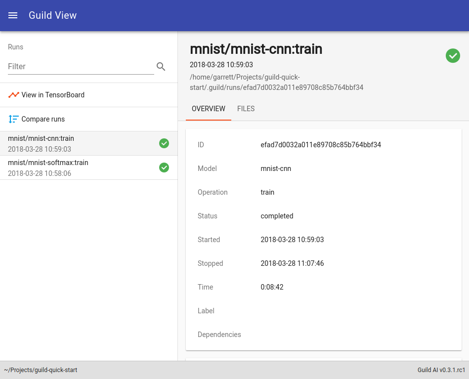
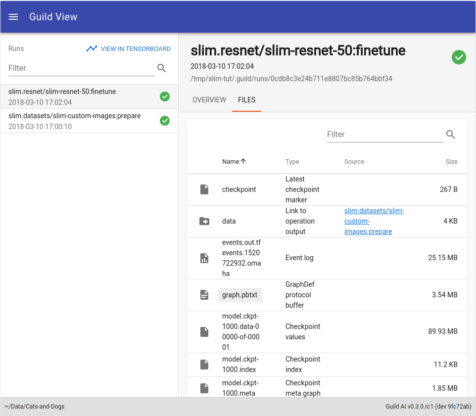
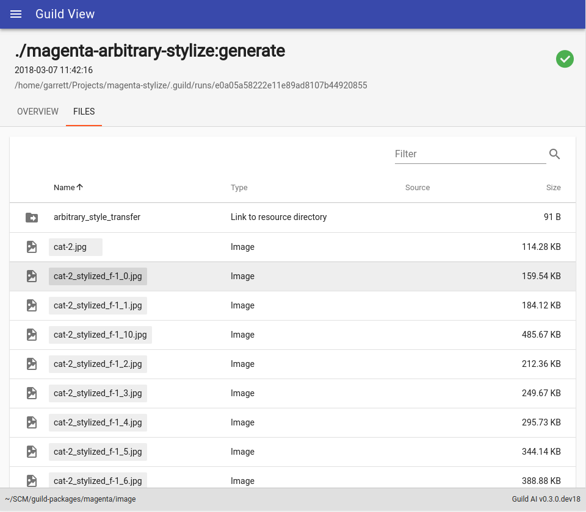
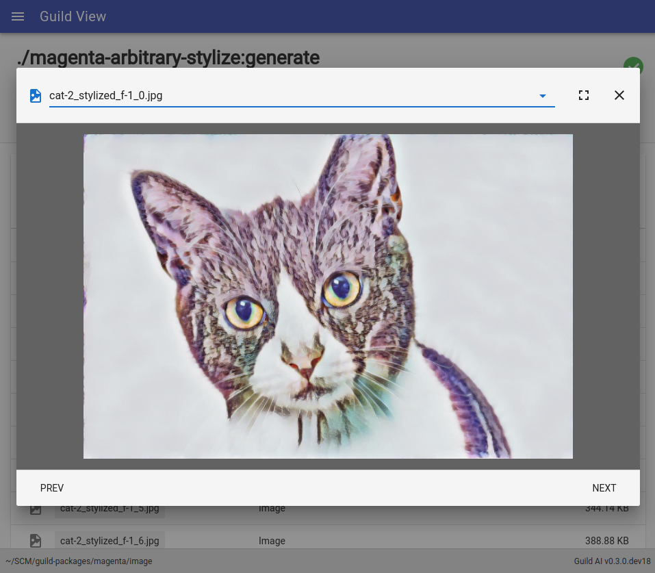

Guild View
Guild View is a visual application provided with the Guild AI toolkit. It can be used to view run results and browse run artifacts. It also integrates with TensorBoard to let you view TensorFlow event logs generated for runs.

- Starting Guild View
- Viewing specific runs
- Filtering runs within Guild View
- Viewing run files
- View runs in TensorBoard
- Automatic updates
- Stopping Guild View
Starting Guild View
Start Guild View by running:
guild view
This will start Guild View an a randomly selected port and open it in your browser.
Important
If you’re running Guild View on a remote server, Guild will not be
able to open it on your workstation. Instead, manually open the link
displayed by the guild view command.
If you’d like to run Guild View on a specific port, use:
guild view --port PORT
If you’d like to start Guild View without opening a new browser window, use:
guild view --no-open
For more help, see the view command.
Viewing specific runs
You can limit the runs that you view using various Guild View options.
For example, to view only runs for operations associated with a
particular model, use the -o (or --operation) option and specify
the model:
guild view -o MODEL
For example, if you’re working with the resnet-50 model, you can
tell Guild View to only show runs for that model by running:
guild view -o resnet-50
For a complete list of options, see the view command.
Filtering runs within Guild View
You can further filter runs in Guild View using the Filter input in the upper left of the window.
Runs can be filtered using:
- Package
- Model
- Operation name
- Run ID
Viewing run files
You can browse run files—both those used as run input and those generated as output—by clicking on the FILES tab.

Use the Filter input at the top of the files list to view only files you’re interested in.
Guild View provides a built-in file viewer for some file types:
- Images
- Music
If a file can be opened in Guild View, its name will appear as a light grey button. When you click the button, Guild will open a file viewer.

When you’re viewing files in Guild View, you can navigate through them using NEXT and PREV buttons.

View runs in TensorBoard
Guild View provides integration with TensorBoard. To view TensorFlow
event logs, click  in the upper left of
the window.
in the upper left of
the window.
Important
If you’re running Guild View on a remote server, the View in TensorBoard feature will work. This is a known issue and will be fixed in upcoming releases of Guild AI. To view runs in TensorBoard on a remote server, use the tensorboard command from the remote server instead of Guild View.
Automatic updates
Guild View and TensorBoard will automatically update to show the latest runs and run files.
Stopping Guild View
Guild View will run until it’s stopped. To stop Guild View, type
CTRL-C in the console window where Guild View is running.
Note
When you’ve stopped Guild View, the associated browser window will no longer update or respond.